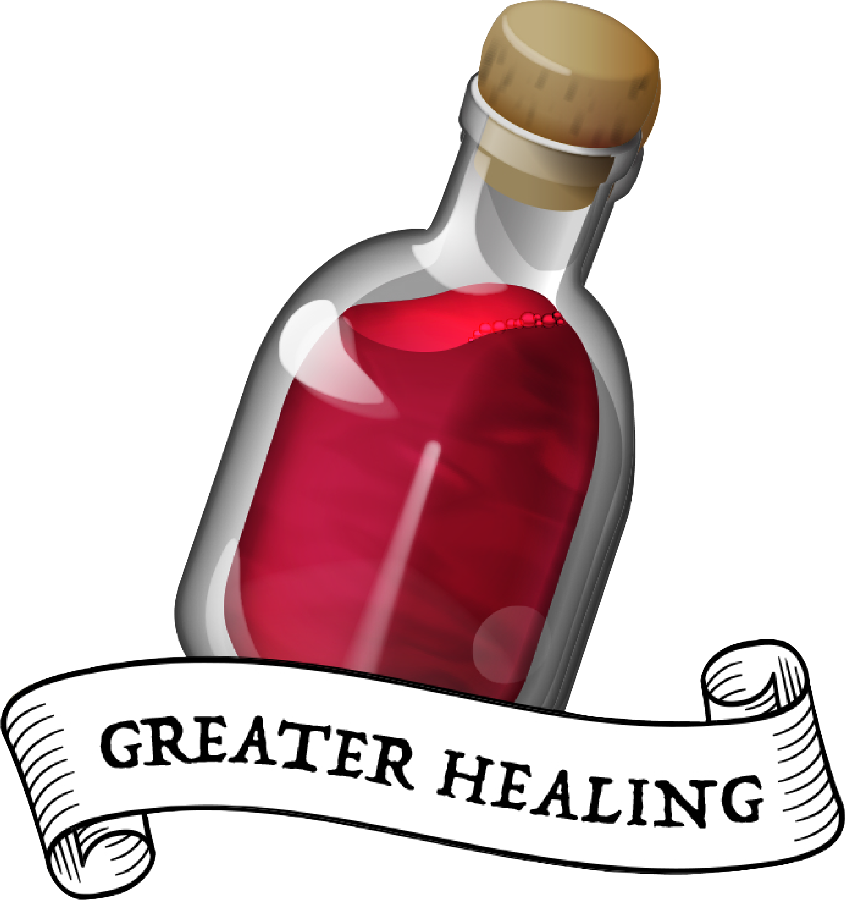
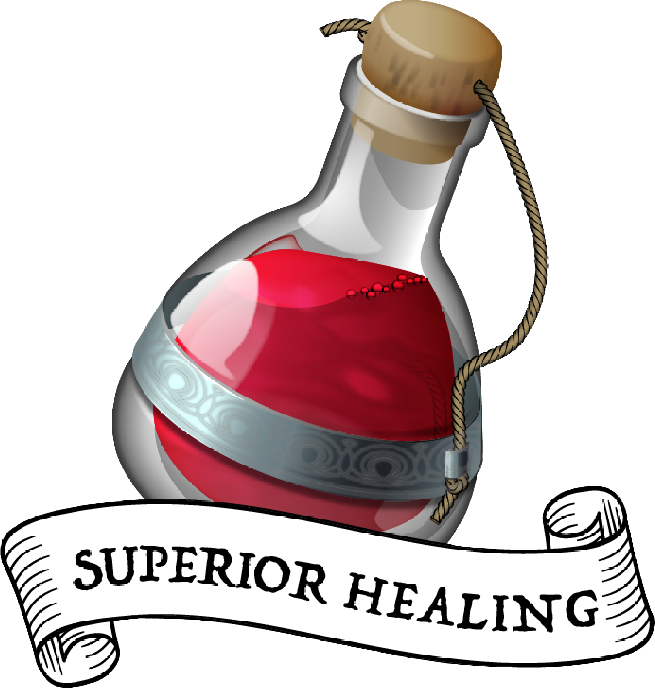
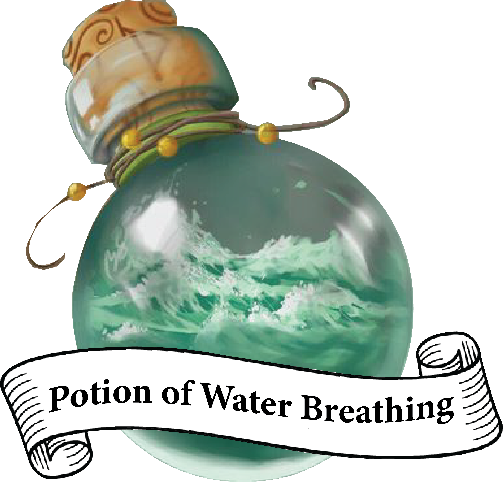
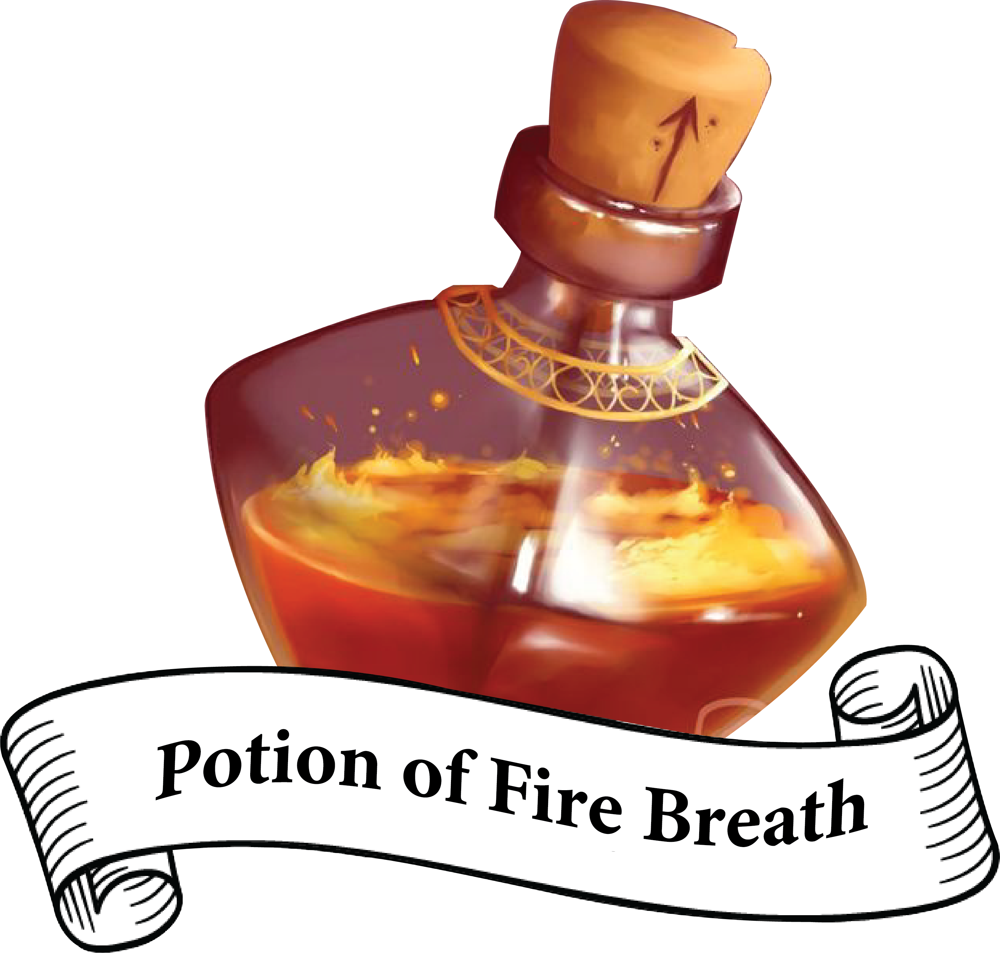

Cloak of Billowing
While wearing this cloak, you can use a bonus action to make it billow dramatically.
100 gp50 gpDrink to regain 2d4+2 hit points.
150 gpDrink to regain 4d4+4 hit points.
450 gpDrink to regain 8d4+8 hit points.
180 gpYou can breathe Underwater for 1 hour after drinking this potion.
150 gpAfter drinking this potion, you can use a bonus action to exhale fire at a target within 30 feet of you. The target must make a DC 13 Dexterity saving throw, taking 4d6 fire damage on a failed save, or half as much damage on a successful one. The effect ends after you exhale the fire three times or when 1 hour has passed.
While wearing this cloak, you can use a bonus action to make it billow dramatically.
100 gp
A mace that resonates! Perfect weapon for Clerics! Magical one-handed mace that deals 1d6 bludgeoning damage.
1250 gpTriple the threat! Rogues and monks should buy this to triple their attack effectiveness! Magical dagger that deals 1d4 piercing damage with a range of 20/60 ft.
1250 gpWhen you hurl this magical weapon and speak its Command Word, it transforms into a bolt of lightning dealing 4d6 lightning damage to any foes caught in its wake. This Command Word can't be used again until the next dawn.
1750 gp| Weapon | Cost | Damage | Properties |
|---|---|---|---|
| Simple Melee Weapons | |||
| Club | 1 sp | 1d4 bludgeoning | Light |
| Dagger | 2 gp | 1d4 piercing | Light, finesse, thrown (range 20/60) |
| Greatclub | 2 sp | 1d8 bludgeoning | Two-handed |
| Handaxe | 5 gp | 1d6 slashing | Light, thrown (range 20/60) |
| Javelin | 5 sp | 1d6 piercing | Thrown (range 30/120) |
| Light hammer | 2 gp | 1d4 bludgeoning | Light, thrown (range 20/60) |
| Mace | 5 gp | 1d6 bludgeoning | |
| Quarterstaff | 2 sp | 1d6 bludgeoning | Versatile (1d8) |
| Sickle | 1 gp | 1d4 slashing | Light |
| Spear | 1 gp | 1d6 piercing | Thrown (range 20/60), versatile (1d8) |
| Simple Ranged Weapons | |||
| Crossbow, light | 25 gp | 1d8 piercing | Ammunition (range 80/320), loading, two-handed |
| Dart | 5 cp | 1d4 piercing | Finesse, thrown (range 20/60) |
| Shortbow | 25 gp | 1d6 piercing | Ammunition (range 80/320), two-handed |
| Sling | 1 sp | 1d4 bludgeoning | Ammunition (range 30/120) |
| Martial Melee Weapons | |||
| Battleaxe | 10 gp | 1d8 slashing | Versatile (1d10) |
| Flail | 10 gp | 1d8 bludgeoning | |
| Glaive | 20 gp | 1d10 slashing | Heavy, reach, two-handed |
| Greataxe | 30 gp | 1d12 slashing | Heavy, two-handed |
| Greatsword | 50 gp | 2d6 slashing | Heavy, two-handed |
| Halberd | 20 gp | 1d10 slashing | Heavy, reach, two-handed |
| Lance | 10 gp | 1d12 piercing | Reach, special |
| Longsword | 15 gp | 1d8 slashing | Versatile (1d10) |
| Maul | 10 gp | 2d6 bludgeoning | Heavy, two-handed |
| Morningstar | 15 gp | 1d8 piercing | |
| Pike | 5 gp | 1d10 piercing | Heavy, reach, two-handed |
| Rapier | 25 gp | 1d8 piercing | Finesse |
| Scimitar | 25 gp | 1d6 slashing | Light, finesse |
| Shortsword | 10 gp | 1d6 piercing | Light, finesse |
| Trident | 5 gp | 1d6 piercing | Thrown (range 20/60), versatile (1d8) |
| War pick | 5 gp | 1d8 piercing | |
| Warhammer | 15 gp | 1d8 bludgeoning | Versatile (1d10) |
| Whip | 2 gp | 1d4 slashing | Finesse, reach |
| Martial Ranged Weapons | |||
| Blowgun | 10 gp | 1 piercing | Ammunition (range 25/100), loading |
| Crossbow, hand | 75 gp | 1d6 piercing | Ammunition (range 30/120), light, loading |
| Crossbow, heavy | 50 gp | 1d10 piercing | Ammunition (range 100/400), heavy, loading, two-handed |
| Longbow | 50 gp | 1d8 piercing | Ammunition (range 150/600), heavy, two-handed |
| Net | 1 gp | - | Special, thrown (range 5/15) |
| Armour | Cost | Armour Class (AC) | Strength Requirement | Stealth |
|---|---|---|---|---|
| Light armour | ||||
| Padded | 5 gp | 11 + Dex mod | Disadvantage | |
| Leather | 10 gp | 11 + Dex mod | ||
| Studded Leather | 45 gp | 12 + Dex mod | ||
| Medium Armour | ||||
| Hide | 10 gp | 12 + Dex mod (max 2) | ||
| Chain shirt | 50 gp | 13 + Dex mod (max 2) | ||
| Scale mail | 50 gp | 14 + Dex mod (max 2) | Disadvantage | |
| Breastplate | 400 gp | 14 + Dex mod (max 2) | ||
| Half plate | 750 gp | 15 + Dex mod (max 2) | Disadvantage | |
| Heavy Armour | ||||
| Ring mail | 30 gp | 14 | Disadvantage | |
| Chain mail | 75 gp | 16 | Str 13 | Disadvantage |
| Splint | 200 gp | 17 | Str 15 | Disadvantage |
| Plate | 1,500 gp | 18 | Str 15 | Disadvantage |
| Shield | ||||
| Shield | 10 gp | +2 |
| Item | Cost | Information |
|---|---|---|
| Adventuring Kits | ||
| Climber's kit | 25 gp | A climber’s kit includes Special pitons, boot tips, gloves, and a harness. You can use the climber’s kit as an action to anchor yourself; when you do, you can’t fall more than 25 feet from the point where you anchored yourself, and you can’t climb more than 25 feet away from that point without undoing the anchor. |
| Disguise kit | 25 gp | This pouch of cosmetics, hair dye, and small props lets you create disguises that change your physical Appearance. Proficiency with this kit lets you add your Proficiency Bonus to any Ability Checks you make to create a visual disguise. |
| Forgery kit | 15 gp | This small box contains a variety of papers and parchments, pens and inks, seals and Sealing wax, gold and silver leaf, and other supplies necessary to create convincing forgeries of physical documents. Proficiency with this kit lets you add your Proficiency Bonus to any Ability Checks you make to create a physical forgery of a document. |
| Healer's kit | 5 gp | This kit is a leather pouch containing bandages, salves, and splints. The kit has ten uses. As an action, you can expend one use of the kit to stabilize a creature that has 0 Hit Points, without needing to make a Wisdom (Medicine) check. |
| Poisoner's kit | 50 gp | A poisoner's kit includes the vials, chemicals, and other equipment necessary for the creation of poisons. Proficiency with this kit lets you add your proficiency bonus to any ability checks you make to craft or use poisons. |
| Adventuring Packs | ||
| Burglar's pack | 20 gp | Includes a Backpack, a bag of 1,000 Ball bearings, 10 feet of string, a bell, 5 Candles, a Crowbar, a Hammer, 10 pitons, a Hooded lantern, 2 flasks of oil, 5 days Rations, a Tinderbox, and a Waterskin. The pack also has 50 feet of Hempen rope strapped to the side of it. |
| Diplomat's pack | 40 gp | Includes a chest, 2 cases for maps and Scrolls, a set of Fine clothes, a bottle of ink, an Ink pen, a lamp, 2 flasks of oil, 5 sheets of paper, a vial of Perfume, Sealing wax, and soap. |
| Dungeoneer's pack | 15 gp | Includes a Backpack, a Crowbar, a Hammer, 10 pitons, 10 torches, a Tinderbox, 10 days of Rations, and a Waterskin. The pack also has 50 feet of Hempen rope strapped to the side of it. |
| Entertainer's pack | 40 gp | Includes a Backpack, a Bedroll, 2 costumes, 5 Candles, 5 days of Rations, a Waterskin, and a Disguise Kit. |
| Explorer's pack | 10 gp | Includes a Backpack, a Bedroll, a Mess kit, a Tinderbox, 10 torches, 10 days of Rations, and a Waterskin. The pack also has 50 feet of Hempen rope strapped to the side of it. |
| Priest's pack | 20 gp | Includes a Backpack, a Blanket, 10 Candles, a Tinderbox, an alms box, 2 blocks of incense, a censer, vestments, 2 days of Rations, and a Waterskin. |
| Scholar's pack | 40 gp | Includes a Backpack, a book of lore, a bottle of ink, an Ink pen, 10 sheets of Parchment, a little bag of sand, and a small knife. |
| Abacus | 2 gp | |
| Acid (vial) | 25 gp | As an action, you can splash the contents of this vial onto a creature within 5 feet of you or throw the vial up to 20 feet, shattering it on impact. In either case, make a ranged Attack against a creature or object, treating the acid as an Improvised Weapon. On a hit, the target takes 2d6 acid damage. |
| Alchemist's fire | 50 gp | This sticky, adhesive fluid ignites when exposed to air. As an action, you can throw this flask up to 20 feet, shattering it on impact. Make a ranged Attack against a creature or object, treating the alchemist's fire as an Improvised Weapon. On a hit, the target takes 1d4 fire damage at the start of each of its turns. A creature can end this damage by using its action to make a DC 10 Dexterity check to extinguish the flames. |
| Antitoxin | 50 gp | A creature that drinks this vial of liquid gains advantage on Saving Throws against poison for 1 hour. It confers no benefit to Undead or Constructs. |
| Backpack | 2 gp | |
| Ball bearings (bag of 1,000) | 1 gp | As an action, you can spill these tiny metal balls from their pouch to cover a level, square area that is 10 feet on a side. A creature moving across the covered area must succeed on a DC 10 Dexterity saving throw or fall prone. A creature moving through the area at half speed doesn’t need to make the save. |
| Barrel | 2 gp | |
| Basket | 4 sp | |
| Bedroll | 1 gp | |
| Bell | 1 gp | |
| Blanket | 5 sp | |
| Block and tackle | 1 gp | A set of pulleys with a cable threaded through them and a hook to attach to Objects, a block and tackle allows you to hoist up to four times the weight you can normally lift. |
| Book | 25 gp | |
| Bottle, glass | 2 gp | |
| Bucket | 5 cp | |
| Caltrops (bag of 20) | 1 gp | As an action, you can spread a single bag of caltrops to cover a 5-foot-square area. Any creature that enters the area must succeed on a DC 15 Dexterity saving throw or stop moving and take 1 piercing damage. Until the creature regains at least 1 hit point, its walking speed is reduced by 10 feet. A creature moving through the area at half speed doesn't need to make the saving throw. |
| Candle | 1 cp | For 1 hour, a candle sheds bright light in a 5-foot radius and dim light for an additional 5 feet. |
| Case, crossbow bolt | 1 gp | |
| Case, map or scroll | 1 gp | |
| Chain (10 ft.) | 5 gp | A chain has 10 Hit Points. It can be burst with a successful DC 20 Strength check. |
| Chalk (1 piece) | 1 cp | |
| Chest | 5 gp | |
| Clothes, common | 5 sp | |
| Clothes, costume | 5 gp | |
| Clothes, fine | 15 gp | |
| Clothes, traveler's | 2 gp | |
| Component pouch | 25 gp | |
| Crowbar | 2 gp | Using a crowbar grants advantage to Strength Checks where the crowbar's leverage can be applied. |
| Fishing tackle | 1 gp | |
| Flask or tankard | 2 cp | |
| Grappling hook | 2 gp | |
| Hammer | 1 gp | |
| Hammer, sledge | 2 gp | |
| Hourglass | 25 gp | |
| Hunting trap | 5 gp | When you use your action to set it, this trap forms a saw-toothed steel ring that snaps shut when a creature steps on a pressure plate in the center. The trap is affixed by a heavy chain to an immobile object, such as a tree or a spike driven into the ground. A creature that steps on the plate must succeed on a DC 13 Dexterity saving throw or take 1d4 piercing damage and stop moving. Thereafter, until the creature breaks free of the trap, its Movement is limited by the length of the chain (typically 3 feet long). A creature can use its action to make a DC 13 Strength check, freeing itself or another creature within its reach on a success. Each failed check deals 1 piercing damage to the trapped creature. |
| Ink (1 ounce bottle) | 10 gp | |
| Ink pen | 2 cp | |
| Jug or pitcher | 2 cp | |
| Ladder (10 ft.) | 1 sp | |
| Lamp | 5 sp | A lamp casts bright light in a 15-foot radius and dim light for an additional 30 feet. Once lit, it burns for 6 hours on a flask (1 pint) of oil. |
| Lantern, bullseye | 10 gp | A Bullseye lantern casts bright light in a 60-foot cone and dim light for an additional 60 feet. Once lit, it burns for 6 hours on a flask (1 pint) of oil. |
| Lantern, hooded | 5 gp | A Hooded lantern casts bright light in a 30-foot radius and dim light for an additional 30 feet. Once lit, it burns for 6 hours on a flask (1 pint) of oil. As an action, you can lower the hood, reducing the light to dim light in a 5-foot radius. |
| Lock | 10 gp | A key is provided with the lock. Without the key, a creature proficient with Thieves' Tools can pick this lock with a successful DC 15 Dexterity check. Your DM may decide that better locks are available for higher prices. |
| Magnifying glass | 100 gp | This lens allows a closer look at small Objects. It is also useful as a substitute for flint and steel when starting fires. Lighting a fire with a magnifying glass requires light as bright as sunlight to focus, tinder to Ignite, and about 5 minutes for the fire to Ignite. A magnifying glass grants advantage on any ability check made to appraise or inspect an item that is small or highly detailed. |
| Manacles | 2 gp | These metal restraints can bind a Small or Medium creature. Escaping the manacles requires a successful DC 20 Dexterity check. Breaking them requires a successful DC 20 Strength check. Each set of manacles comes with one key. Without the key, a creature proficient with Thieves' Tools can pick the manacles' lock with a successful DC 15 Dexterity check. Manacles have 15 Hit Points. |
| Mirror, steel | 5 gp | |
| Oil (flask) | 1 sp | Oil usually comes in a clay flask that holds 1 pint. As an action, you can splash the oil in this flask onto a creature within 5 feet of you or throw it up to 20 feet, shattering it on impact. Make a ranged Attack against a target creature or object, treating the oil as an Improvised Weapon. On a hit, the target is covered in oil. If the target takes any fire damage before the oil dries (after 1 minute), the target takes an additional 5 fire damage from the burning oil. You can also pour a flask of oil on the ground to cover a 5-foot-square area, provided that the surface is level. If lit, the oil burns for 2 rounds and deals 5 fire damage to any creature that enters the area or ends its turn in the area. A creature can take this damage only once per turn. |
| Paper (one sheet) | 2 sp | |
| Parchment (one sheet) | 1 sp | |
| Perfume (vial) | 5 gp | |
| Pick, miner's | 2 gp | |
| Piton | 5 cp | |
| Poison, basic (vial) | 100 gp | You can use the poison in this vial to coat one slashing or piercing weapon or up to three pieces of Ammunition. Applying the poison takes an action. A creature hit by the Poisoned weapon or Ammunition must make a DC 10 Constitution saving throw or take 1d4 poison damage. Once applied, the poison retains potency for 1 minute before drying. |
| Pole (10 ft.) | 1 cp | |
| Pot, iron | 2 sp | |
| Pouch | 5 sp | |
| Quiver | 1 gp | |
| Ram, portable | 4 gp | You can use a portable ram to break down doors. When doing so, you gain a +4 bonus on the Strength check. One other character can help you use the ram, giving you advantage on this check. |
| Rations (1 day) | 1 gp | |
| Robes | 1 gp | |
| Rope, hempen (50 ft.) | 1 gp | Rope has 2 Hit Points and can be burst with a DC 17 Strength check. |
| Rope, silk (50 ft.) | 10 gp | Rope has 2 Hit Points and can be burst with a DC 17 Strength check. |
| Sack | 1 cp | |
| Scale, merchant's | 5 gp | A scale includes a small balance, pans, and a suitable assortment of weights up to 2 pounds. With it, you can measure the exact weight of small Objects, such as raw precious metals or Trade Goods, to help determine their worth. |
| Sealing wax | 5 sp | |
| Shovel | 2 gp | |
| Signal whistle | 5 cp | |
| Signet ring | 5 gp | |
| Soap | 2 cp | |
| Spikes, iron (10) | 1 gp | |
| Spellbook | 50 gp | |
| Spyglass | 1,000 gp | Objects viewed through a spyglass are magnified to twice their size. |
| Tent, two-person | 2 gp | |
| Tinderbox | 5 sp | This small container holds flint, fire steel, and tinder (usually dry cloth soaked in light oil) used to kindle a fire. Using it to light a torch - or anything else with abundant, exposed fuel - takes an action. Lighting any other fire takes 1 minute. |
| Torch | 1 sp | A torch burns for 1 hour, providing bright light in a 20-foot radius and dim light for an additional 20 feet. If you make a melee Attack with a burning torch and hit, it deals 1 fire damage. |
| Vial | 1 gp | |
| Waterskin | 2 sp | |
| Whetstone | 1 sp |